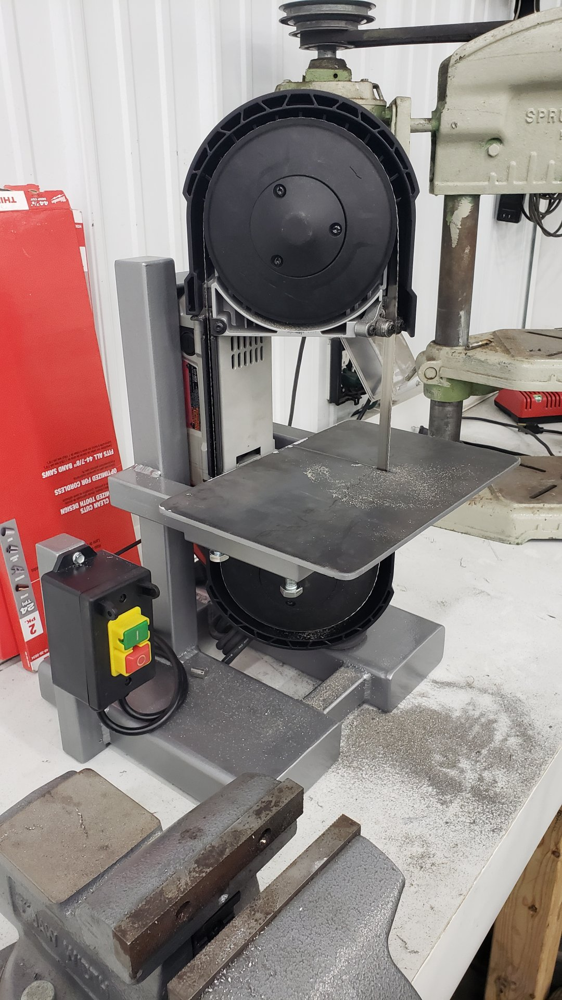

The exhaust on my new to me 88 Integra was beyond saving with several holes in the resonator and the muffler having turned questionably brittle. As this is suppose to be a summer daily driver that’s pleasant to drive I decided to splurge and build a stainless exhaust setup to save my ears and retain my sanity.

So much room for activities in the rear.

Since this would be the first stainless exhaust I’ve ever built, it took me a few hours of research to figure things out. My welder is a trusty little Lincoln Power Mig 140c and up until now I’ve only ever used it to weld mild steel with L56 wire.
Since I didn’t want the new welds to rust out I opted to switch to a stainless wire (309L) and tri-mix gas.
I’d be lying if I said I wasn’t embarassed with how the welds came out but we all start somewhere.
Before I could even weld up the exhaust though, I needed something to cut the pipe with. I’ve been wanting a band saw for sometime now but didn’t want to get an overly large one. So I opted to go the DIY route.
Built from random scrap metal I had laying around. I used the portaband to cut all of this.

Straight enough for everything I’ll be building.


Making the cutting table took some serious time. I made it using just an angle grinder, drill, and file.

Table is easy to remove so I can swap blades on the fly.

Done.


Not really sure where to start I opted to begin in the middle.

Various bends I ordered from Summit. I waaayyy overestimated how much pipe I’d need.

Maybe if I just make a bunch of random cuts it’ll look like I know what I’m doing.

Felt a little bad cutting the tip off the yonaka exhaust but it hit the bumper and was way too big.

Now were getting somewhere.


First hanger welded on.

Mocked up in position and 2 more hangers welded on.


Some of the welds are embarassingly bad.

But it’s just a daily driver and not a show car so I can live with them.

Old setup vs new setup.

Took a few cuts to get the EF muffler to fit.

My work setup. If I could do things over I’d get more jackstands or somekind of lift.

Engine bay looking fresh. Even still has the OG heatshield on the exhaust manifold.